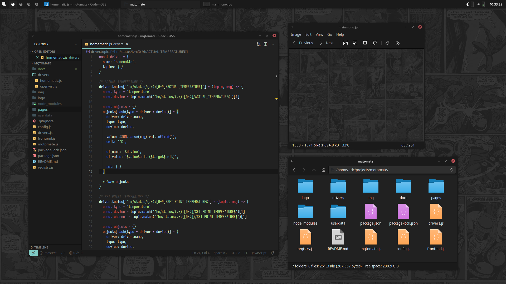
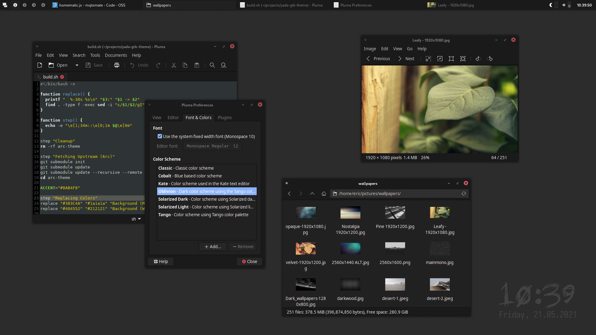

yada-gtk
yada-gtk (yet another dark arc-theme) is yet another dark theme for GTK2 and GTK3 based on Arc-Theme. Yada-GTK is not really a theme on its own, but rather a script that, replaces the default colors to a more monochrome and dark ambiance.
The latest build can be found at the Release Page.
To adjust the colors to your likings and build your own, please follow the Arc-Theme instructions
to install all dependencies. You can then modify and run the Makefile in this repository.
Screenshots
 (Awesome WM, VS Code, Eye of Mate, Thunar)
 (Awesome WM, Pluma, Eye of Mate, Thunar, Conky)